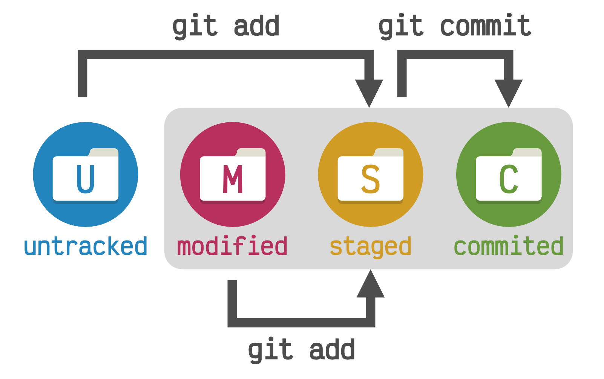
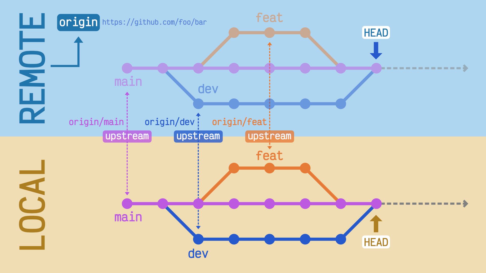

git ✨
*Lo que nunca te contaron y quizás sería por algo
Índice
- Introducción al control de versiones
- Preparación del entorno de desarrollo
- Flujo de trabajo
- Comandos en detalle
- Convenciones y buenas prácticas
¿Qué es el control de versiones?
~/work$ ls -l
procesa_datos_00.R
procesa_datos_01.R
procesa_datos_02.R
procesa_datos_03.R
procesa_datos_04.R
procesa_datos_05.R
procesa_datos_06.R
procesa_datos_07.R
procesa_datos_08.R
procesa_datos_09.R
procesa_datos_10.R
procesa_datos_11.R
procesa_datos_12.R
procesa_datos_13.R
procesa_datos_14.R
procesa_datos_15.R
procesa_datos_16.R
procesa_datos_17.R
procesa_datos_18.R
procesa_datos_19.R
procesa_datos_20.R
~/work$ tree
.
├── cambios
│ ├── arregla_error1
│ ├── arreglando_procesa
│ ├── mejora_funcionalidad
│ ├── nuevo_problema
│ └── soluciona_bug
├── definitivo
│ ├── lanzamiento
│ ├── version_final
│ └── version_mejorada
└── pruebas
├── pruebas_antes
├── pruebas_despues
└── pruebas_final
14 directories, 0 files

“Se llama control de versiones a la gestión de los diversos cambios que se realizan sobre los elementos de algún producto o una configuración del mismo. Una versión, revisión o edición de un producto, es el estado en el que se encuentra el mismo en un momento dado de su desarrollo o modificación.”
Aclarando conceptos 1️⃣

Aclarando conceptos 2️⃣
repo = repositorio
¿Por qué Git?
- Histórico permanente de cambios.
- Copias de seguridad.
- Trabajo en equipo.
- Crear ramas y/o etiquetas.
- Enfoque social.

Índice
- Introducción al control de versiones
- Preparación del entorno de desarrollo
- Flujo de trabajo
- Comandos en detalle
- Convenciones y buenas prácticas
¿Tengo git instalado?
$ git --version
git version 2.32.0 (Apple Git-132)

Establecer credenciales
$ git config --global user.name "Sergio Delgado Quintero"
$ git config --global user.email "sdelquin@gmail.com"
👇🏻 Crea un fichero en $HOME/.gitconfig
[user]
name = Sergio Delgado Quintero
email = sdelquin@gmail.com
git init
Inicializar un repositorio
$ git init
Initialized empty Git repository in /Users/sdelquin/work/.git/
¿ .git ?
$ tree .git
.git
├── HEAD
├── config
├── description
├── hooks
│ ├── applypatch-msg.sample
│ ├── commit-msg.sample
│ ├── fsmonitor-watchman.sample
│ ├── post-update.sample
│ ├── pre-applypatch.sample
│ ├── pre-commit.sample
│ ├── pre-merge-commit.sample
│ ├── pre-push.sample
│ ├── pre-rebase.sample
│ ├── pre-receive.sample
│ ├── prepare-commit-msg.sample
│ ├── push-to-checkout.sample
│ └── update.sample
├── info
│ └── exclude
├── objects
│ ├── info
│ └── pack
└── refs
├── heads
└── tags
git clone
Clonar un repositorio
Vía $ssh$
$ git clone git@github.com:sdelquin/work.git
Cloning into 'work'...
remote: Enumerating objects: 4, done.
remote: Counting objects: 100% (4/4), done.
remote: Compressing objects: 100% (3/3), done.
Receiving objects: 100% (4/4), done.
remote: Total 4 (delta 0), reused 0 (delta 0), pack-reused 0
*Clave pública/privada
Vía $https$
$ git clone https://github.com/sdelquin/work.git
Cloning into 'work'...
remote: Enumerating objects: 4, done.
remote: Counting objects: 100% (4/4), done.
remote: Compressing objects: 100% (3/3), done.
Receiving objects: 100% (4/4), done.
remote: Total 4 (delta 0), reused 0 (delta 0), pack-reused 0
*Usuario y password
Índice
- Introducción al control de versiones
- Preparación del entorno de desarrollo
- Flujo de trabajo
- Comandos en detalle
- Convenciones y buenas prácticas
Flujo de trabajo 1️⃣
Crear rama de desarrollo
$ git switch -c dev
✅
Flujo de trabajo 2️⃣
Hacer las modificaciones pertinentes
$ ...
✅
Flujo de trabajo 3️⃣
Ver el estado del repo
$ git status
✅
Flujo de trabajo 4️⃣
Añadir los cambios
$ git add .
✅
Flujo de trabajo 5️⃣
Confirmar los cambios
$ git commit -m "First commit"
✅
Flujo de trabajo 6️⃣
Subir cambios al servicio web
$ git push
✅
Índice
- Introducción al control de versiones
- Preparación del entorno de desarrollo
- Flujo de trabajo
- Comandos en detalle
- Convenciones y buenas prácticas
Punto de partida
☁️ https://github.com/sdelquin/work.git
$ git clone https://github.com/sdelquin/work.git
$ cd work
$ ls
LICENSE README.md
git status
Comprobando el estado del repositorio
git status
$ git status
On branch main
Your branch is up to date with 'origin/main'.
nothing to commit, working tree clean
git status
Modificamos README.md 👷🏻♀️
$ git status
On branch main
Your branch is up to date with 'origin/main'.
Changes not staged for commit:
(use "git add [file]..." to update what will be committed)
(use "git restore [file]..." to discard changes in working directory)
modified: README.md
no changes added to commit (use "git add" and/or "git commit -a")
Estados de un fichero en git

git add
Añadiendo cambios/ficheros a "staged"
git add
$ git add README.md
$ git status
On branch main
Your branch is up to date with 'origin/main'.
Changes to be committed:
(use "git restore --staged [file]..." to unstage)
modified: README.md
⚡ git add .
git commit
Consolidando los cambios hechos
git commit
$ git commit -m "Add welcome message"
[main ae0abb3] Add welcome message
1 file changed, 1 insertion(+)
$ git status
On branch main
Your branch is ahead of 'origin/main' by 1 commit.
(use "git push" to publish your local commits)
nothing to commit, working tree clean
Me olvidé de incluir un cambio en el último commit

💡 ¡Hay solución!
git commit --amend
- Haz los cambios que necesites 👷🏻♀️
-
"Comitea" usando el siguiente comando
$ git add . $ git commit --amend -
Opción "desatentida"
$ git add . $ git commit --amend --no-edit
git restore
El CTRL-Z de toda la vida
git restore
Escenario 1: Hemos modificado
README.md pero está aún sin añadir
$ git status
On branch main
Your branch is up to date with 'origin/main'.
Changes not staged for commit:
(use "git add [file]..." to update what will be committed)
(use "git restore [file]..." to discard changes in working directory)
modified: README.md
no changes added to commit (use "git add" and/or "git commit -a")
$ git restore README.md
$ git status
On branch main
Your branch is up to date with 'origin/main'.
nothing to commit, working tree clean
git restore
Escenario 2: Hemos modificado
README.md y lo hemos añadido
$ git status
On branch main
Your branch is up to date with 'origin/main'.
Changes to be committed:
(use "git restore --staged [file]..." to unstage)
modified: README.md
$ git restore --staged README.md
$ git restore README.md
$ git status
On branch main
Your branch is up to date with 'origin/main'.
nothing to commit, working tree clean
Ramas
git branch
Gestionando las ramas
git branch 1️⃣
Ramas locales 🎋
$ git branch
* main
Ramas remotas ☁️
$ git branch -r
origin/HEAD -> origin/main
origin/main
Todas las ramas 🌴
$ git branch -a
* main
remotes/origin/HEAD -> origin/main
remotes/origin/main
Todos los detalles 🔍
$ git branch -avv
* main 788a2d7 [origin/main] Initial commit
remotes/origin/HEAD -> origin/main
remotes/origin/main 788a2d7 Initial commit
git branch 2️⃣
Crear ramas 🚀
$ git branch dev
$ git branch feat
$ git status
dev
feat
* main
Borrar ramas 🗑️
$ git branch -d dev
Deleted branch dev (was ae0abb3).
$ git branch -d feat
Deleted branch feat (was ae0abb3).
$ git status
* main
git remote
Gestionando las direcciones remotas
git remote
$ git remote -v
origin git@github.com:sdelquin/work.git (fetch)
origin git@github.com:sdelquin/work.git (push)
git remote addgit remote remove
git switch
Cambiando* a otras ramas
git switch

$ git branch
* main

$ git switch -c blue
Switched to a new branch 'blue'
$ git branch
* blue
main

$ git switch -c red
Switched to a new branch 'red'
$ git branch
blue
main
* red

$ git switch main
Switched to a new branch 'main'
$ git branch -d red
Deleted branch red (was 6b70804).
$ git status
blue
* main
$ git switch -c red
Switched to a new branch 'red'
$ git status
blue
main
* red

$ git switch blue
$ git commit
$ git commit
$ git switch -c green
$ git commit
$ git switch red
$ git commit
$ git commit
$ git commit
git push
Subiendo los cambios al "upstream"
git push 1️⃣
$ git push
Enumerating objects: 5, done.
Counting objects: 100% (5/5), done.
Delta compression using up to 8 threads
Compressing objects: 100% (2/2), done.
Writing objects: 100% (3/3), 340 bytes | 340.00 KiB/s, done.
Total 3 (delta 0), reused 0 (delta 0), pack-reused 0
To github.com:sdelquin/work.git
bdede5e..ae0abb3 main -> main
$ git branch -vv
* main ae0abb3 [origin/main] Add welcome message
git push 2️⃣
$ git switch -c dev
Switched to a new branch 'dev'
$ git push
fatal: The current branch dev has no upstream branch.
To push the current branch and set the remote as upstream, use
git push --set-upstream origin dev
😨
$ git branch -vv
* dev ae0abb3 Add welcome message
main ae0abb3 [origin/main] Add welcome message
git push 2️⃣
$ git push -u origin dev
Total 0 (delta 0), reused 0 (delta 0), pack-reused 0
remote:
remote: Create a pull request for 'dev' on GitHub by visiting:
remote: https://github.com/sdelquin/work/pull/new/dev
remote:
To github.com:sdelquin/work.git
* [new branch] dev -> dev
Branch 'dev' set up to track remote branch 'dev' from 'origin'.
-u $\Leftrightarrow$
--set-upstream
$ git branch -vv
* dev ae0abb3 [origin/dev] Add welcome message
main ae0abb3 [origin/main] Add welcome message
git merge
Mezclando cambios desde otra rama
git merge 1️⃣
$ git switch dev
$ vi README.md # modificación
$ git add .
$ git commit -m "New notes"
$ git switch main
$ git merge dev --no-edit
Merge made by the 'recursive' strategy.
README.md | 1 +
1 file changed, 1 insertion(+)
git merge 2️⃣
$ git switch dev
$ vi README.md # modificación
$ git add .; git commit -m "Say hola"
$ git switch main
$ vi README.md # modificación
$ git add .; git commit -m "Say hallo"
$ git merge dev --no-edit
Auto-merging README.md
CONFLICT (content): Merge conflict in README.md
Automatic merge failed; fix conflicts and then commit the result.
😱😱😱
git merge 2️⃣
README.md
# work
<<<<<<< HEAD
Hallo
||||||| 8f1e81f
=======
Hola
>>>>>>> dev
Just for testing purposes
Hello World!
Changes from dev branch
Keep on working
README.md
# work
Hola
Just for testing purposes
Hello World!
Changes from dev branch
Keep on working
git merge 2️⃣
$ git status
On branch main
Your branch is ahead of 'origin/main' by 3 commits.
(use "git push" to publish your local commits)
You have unmerged paths.
(fix conflicts and run "git commit")
(use "git merge --abort" to abort the merge)
Unmerged paths:
(use "git add [file]..." to mark resolution)
both modified: README.md
no changes added to commit (use "git add" and/or "git commit -a")
$ git add README.md
$ git commit -m "Fix conflict"
[main 101d7fb] Fix conflict
1 file changed, 1 insertion(+), 1 deletion(-)
git pull
Actualizando los cambios remotos
git pull
$ git switch dev
$ # edit README.md
$ git add .
$ git commit
$ git push

$ git switch main
$ git pull
git pull
$\Leftrightarrow$
git fetch $+$
git merge

git stash
Almacenando temporalmente los cambios
git stash
$ git status
On branch main
Your branch is up to date with 'origin/main'.
Changes not staged for commit:
(use "git add [file]..." to update what will be committed)
(use "git restore [file]..." to discard changes in working directory)
modified: README.md
Untracked files:
(use "git add [file]..." to include in what will be committed)
config.py
no changes added to commit (use "git add" and/or "git commit -a")
$ git stash -u
Saved working directory and index state WIP on main:
c18e3f7 Merge branch 'main' of github.com:sdelquin/work
$ git status
On branch main
Your branch is up to date with 'origin/main'.
nothing to commit, working tree clean
$ git stash pop
On branch main
Your branch is up to date with 'origin/main'.
Changes not staged for commit:
(use "git add [file]..." to update what will be committed)
(use "git restore [file]..." to discard changes in working directory)
modified: README.md
Untracked files:
(use "git add [file]..." to include in what will be committed)
config.py
no changes added to commit (use "git add" and/or "git commit -a")
Dropped refs/stash@{0} (eb45cfdc63836cbc6417c358780ba55722c795b3)
git log
Mostrando el historial de cambios
git log
$ git log --pretty=oneline --abbrev-commit
c18e3f7 (HEAD -> main) Merge branch 'main' of github.com:sdelquin/work
1705ee9 (origin/main) Merge pull request #2 from sdelquin/dev
3149c76 (origin/dev, dev) Work in progress
101d7fb Fix conflict
24c1201 Say hallo
66c4e10 Say hola
aa94f74 Merge branch 'dev'
8f1e81f New notes
e44f857 Merge pull request #1 from sdelquin/dev
e8983c7 More changes
ae0abb3 Add welcome message
bdede5e Initial commit
git tag
Etiquetando versiones
git tag
$ vi sum.py # nueva funcionalidad
$ git add sum.py
$ git commit -m "Add sum"
$ git tag -a 1.0.0 -m "Release version 1.0.0"
$ git tag
1.0.0
⚡ git push --follow-tags
Índice
- Introducción al control de versiones
- Preparación del entorno de desarrollo
- Flujo de trabajo
- Comandos en detalle
- Convenciones y buenas prácticas
Estructura /mínima/ del repo
README.md-
LICENSE$\Rightarrow$ AGPL3 CHANGELOG.gitignore
Lo que /no/ debería estar en el repo
- Contraseñas o credenciales
- Ficheros generados
- Ficheros multimedia
Buenas prácticas en commits
- Commit $ \begin{cases} \text{Tarea general} \\ \text{Línea en blanco} \\ \text{Cambios aplicados} \end{cases} $
- No usar rutas absolutas
- Mantener estado funcional tras commit
- Commits atómicos
- Commits formato $\neq$ funcionalidad
- 🇺🇸 vs 🇪🇸
- Etiquetado de versiones
Indicaciones a nivel de código
- Escribir código en 🇺🇸
#TODO- No usar rutas absolutas
- Código transversal $\Rightarrow$ Paquete
- Hardcodear $\Rightarrow$ Configuraciones
GitLab corporativo
ETL
📂 ETL Operaciones
📂 020.010 Población
📂 E30260A Explotación Estadística del Padrón Municipal
⭐ E30260A-DD2SD-PC0001.V0.1
📂 070.010 Industria
📂 E30050A Indice de Producción Industrial
⭐ E30050A-MDS2MDS-PC0001-V0.1
📂 080.010 Comercio
📂 E30103A Indices de Comercio al por Menor
⭐ E30103A-MDS2MDS-PC0001-VO.1
📂 ETL Transversales
📂 PROCESA Procesamiento de datos y análisis de resultados
📂 GSBPM6.1.2 Ejecutar ajustes estacional-efect calendario
⭐ GSBPM6.1.2-PC0001-V0.1
GitLab corporativo
Software
📂 Sistema de gestión de ETL
⭐ coetl
⭐ ETL Launcher
¡Gracias! 🎉